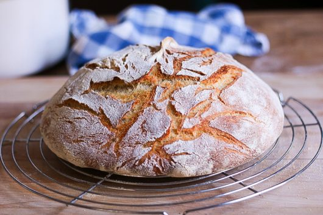

George Lang's Potato Bread Recipe With Caraway Seeds

A simple, free form loaf of bread that is enriched with mashed potatos.
Ingredients
-
3 Medium Potatos
-
1 Package Active Dry Yeast
-
2 1/2 Cups Warm Water
-
2 Pounds Unbleached All Purpose Flour
-
1 1/2 Tablespoons Salt
-
1/2 Tablespoon Caraway Seeds
-
Cornmeal (Optional)
Directions
-
Scrub the potatos, and then boil them until tender. When ready, peel and mash them.
-
While potatos cool, dissolve yeast in 1/2 cup of the warm water.
-
Mix well with 3 tablespoons of flour.
-
Let this paste rise for 30 minutes.
-
Add the remaining two cups of warm water, salt, caraway seeds, flour, and mashed potatos.
-
Knead the dough 12 to 15 miutes, until it is elastic and full of life.
-
Shape into a ball and place into an oiled bowl, turing the dough to coat with oil.
-
Cover and place in a warm spot for 1 to 2 hours, or until doubled in size.
-
Remove the dough and gently deflate.
-
Knead for another 4 to 5 minutes.
-
Shape into a round loaf and place on a buttered 12 inch skillet with rounded sides. Let rise for 30 minutes.
-
Brush the loaf with water and score a deep X into the top of the loaf.
-
Bake in a preheated 400 degree oven for 1 hour or until it is nicely browned and sounds hollow when tapped with the knuckles.
-
Remove bead from pan and allow to fully cool to room temperature before cutting.